Local patient library
Import folders, CDs, DVDs or USB drives. Files are copied and indexed in a local database you can search by name, patient ID or accession. Open a CD without importing it.
Windows desktop · works fully offline
Import angiograms from CD, USB or folders into a local patient library. Play cine runs, measure, run QCA, and export to MP4 or PowerPoint in a few clicks. Patient data never leaves the computer.
Windows 10 / 11, 64-bit. Demo: up to 15 cases, no key needed.
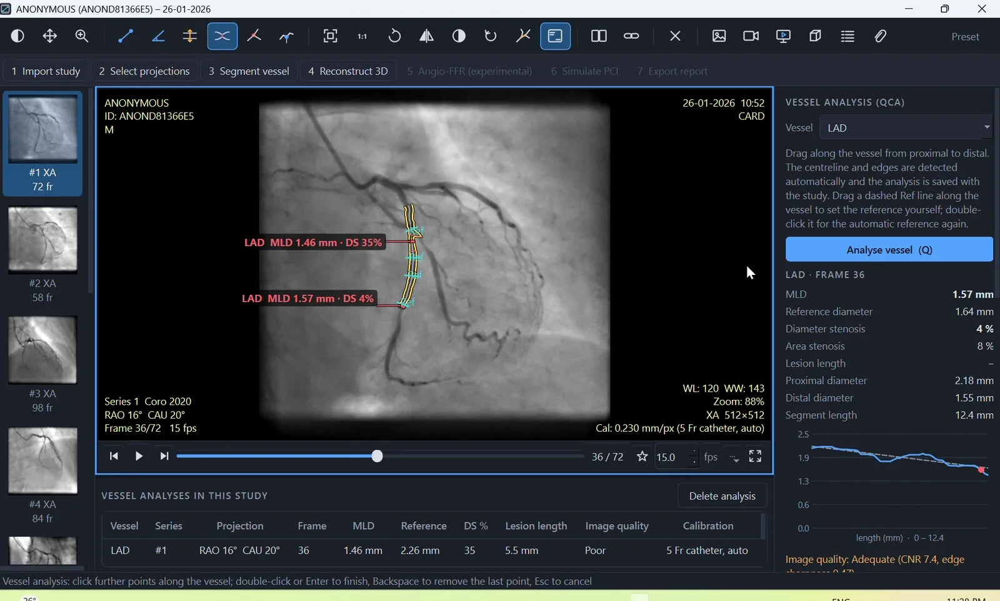
Built by a cardiologist for day-to-day cath-lab work, not for a radiology department.
Import folders, CDs, DVDs or USB drives. Files are copied and indexed in a local database you can search by name, patient ID or accession. Open a CD without importing it.
Runs play at their recorded frame rate. Window/level, zoom, pan, rotate, flip, bookmarks, full screen, and two projections side by side with linked cine.
Distance and angle tools. Calibrate on the catheter: its width is detected automatically and you only confirm the French size.
Drag or click along a vessel for MLD, reference diameter, % diameter and area stenosis, lesion length and a diameter graph. Edit edges and reference by hand, with live recalculation. Three-click bifurcation analysis for main vessel and side branch.
Full and CathOS editionsSave frames as PNG/JPG, export runs as MP4 (optionally anonymised), put selected runs into a PowerPoint with embedded video, or export a whole case to USB, CD/DVD or a folder.
Tag cases as CTO, bifurcation, left main, ROTA, IVL, IVUS, OCT and more, or add your own types. Attach Word, PDF or image reports to each patient.
Back up the whole library to an external drive or folder. Only new files are copied, every file is checked, and a restore never overwrites an existing library.
No cloud, no account, no internet needed. Images and reports stay in a folder on your PC, licensed per computer.
Research module
For researchers: automatic vessel segmentation, image-quality and overlap checks, and two-view 3D reconstruction of a coronary segment from the DICOM geometry, with every check shown alongside its value. Further steps toward an angiography-derived pressure ratio are in development.
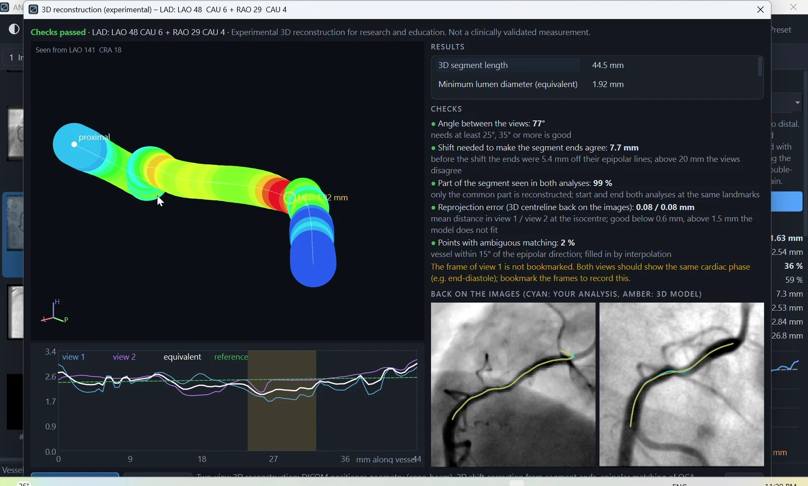
CathOS edition
CathOS adds structured documentation and reports to the viewer, running on the same PC and still fully offline.
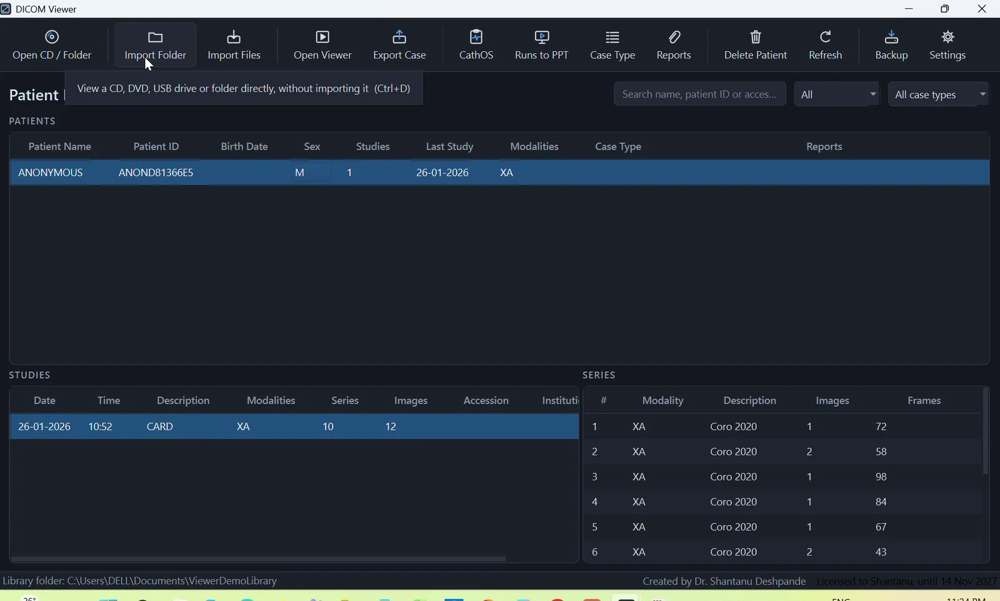
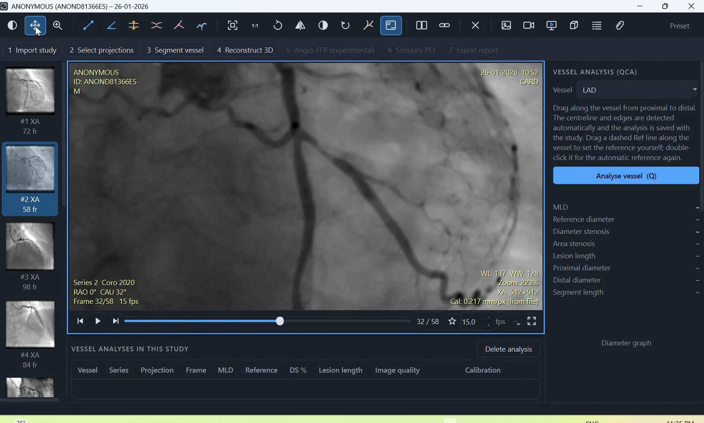
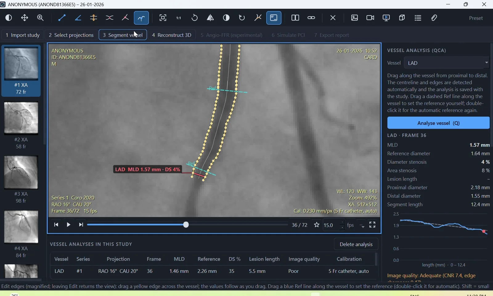
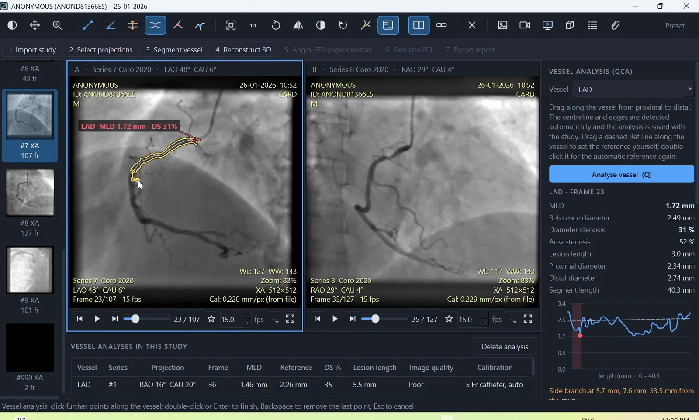
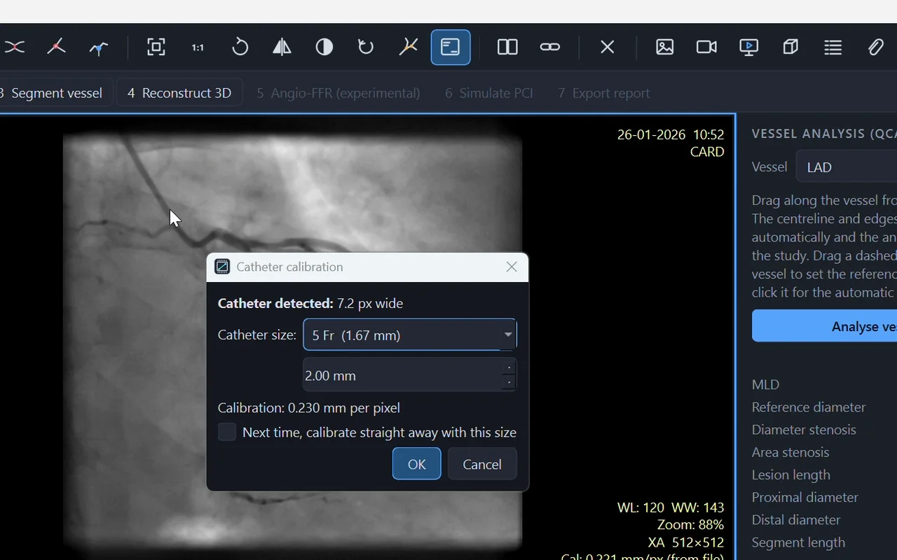
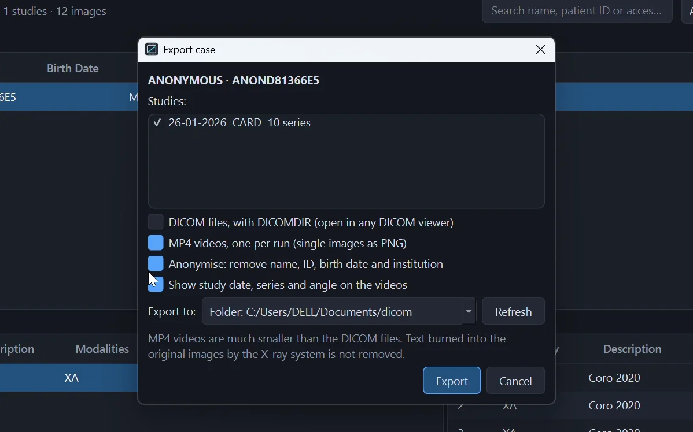
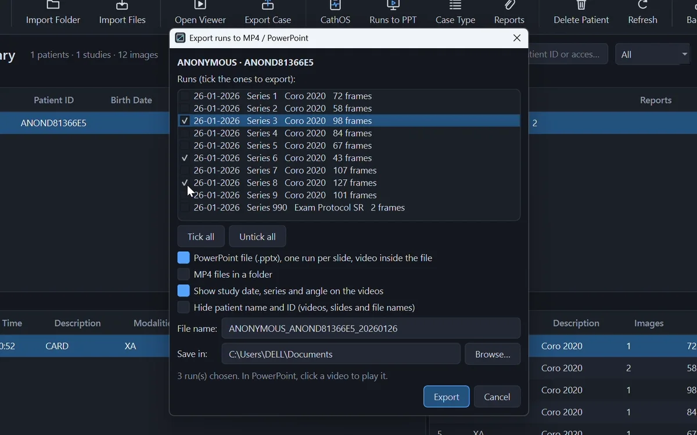
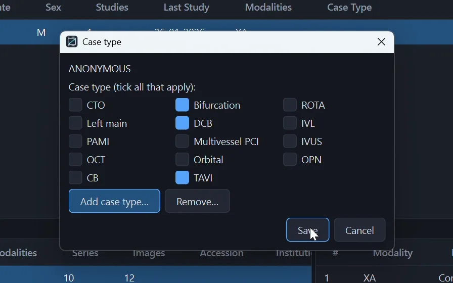
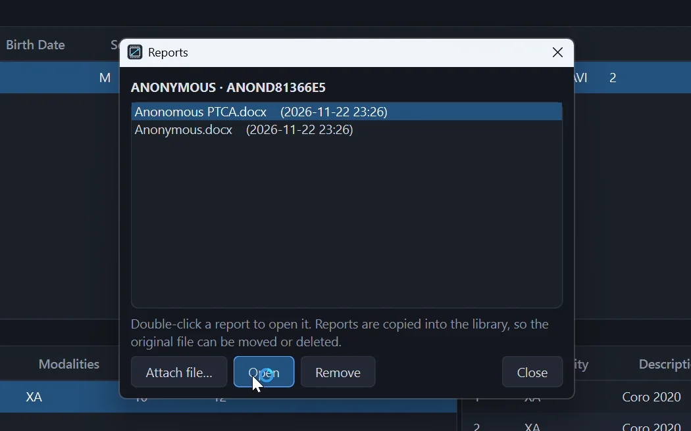
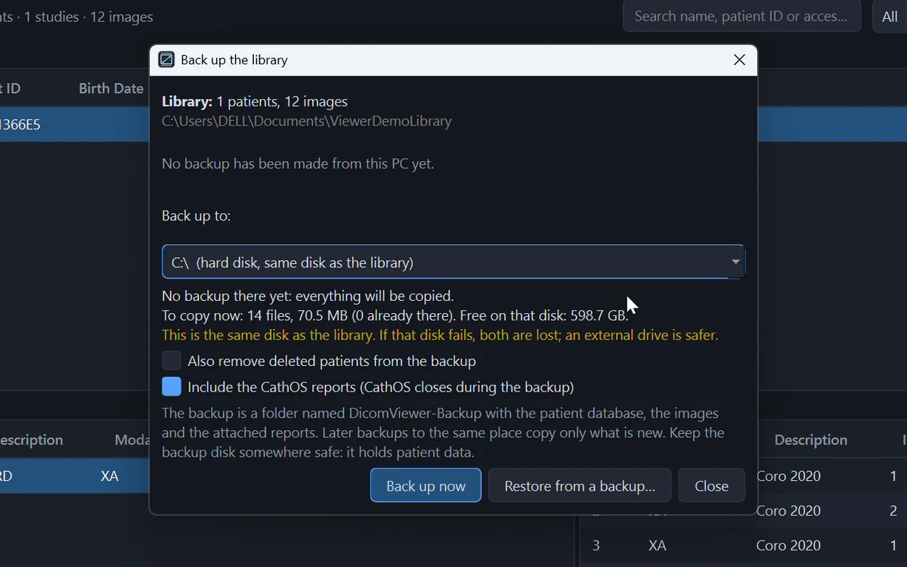
Screenshots show anonymised demo cases.
One licence key per PC. Every edition keeps the same patient library, so you can move up later without re-importing.
Contact for pricing
Viewing, measuring and sharing.
Recommended
Contact for pricing
Everything in Basic, plus analysis.
Contact for pricing
Everything in Full, plus reporting.
*Research and educational use only.
Try the demo first: the full program, limited to 15 cases. After buying, you install the edition you licensed and paste in your key.
Up to 15 cases. No key needed.
Download demoNeeds a licence key.
Download BasicNeeds a licence key.
Download FullNeeds a licence key.
Download CathOSWindows may show a SmartScreen warning for a new installer: choose More info, then Run anyway. Your patient library stays on the PC when you uninstall or upgrade.
Tell us which edition you want and paste your PC ID if you already have it. We will reply with pricing and your licence key.